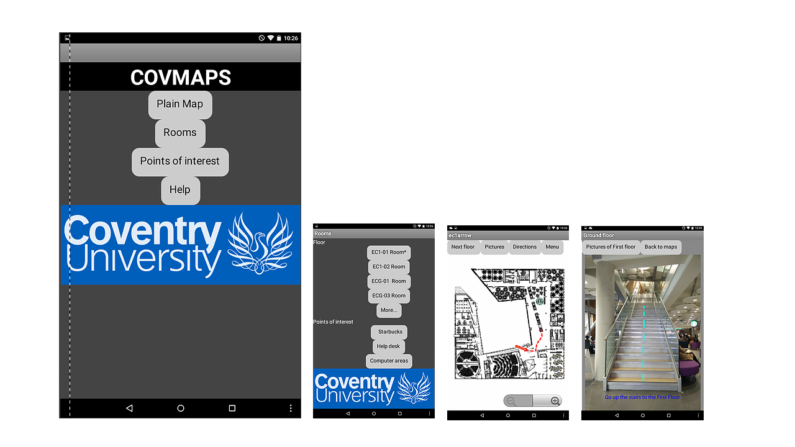

For this app i was put into groups of 3, we used MIT Appinventor its a more
user friendly system, as with the last project we had to create a paper prototype
for enitial design and preform usability test for it. After we carried out
the tests we got some really possative feadback for the app and one of the
users who tested it wanted it to be put onto the app market. For this i created
the visual side for the app creating the maps and the first person view to
help if poeple prefer, there was also on screen instructions for the app which
helped anyone who had difficulty using the app. At the end the app worked really
well and for the final product users who used it even after the project had finished
it was really good and worked as we wanted.